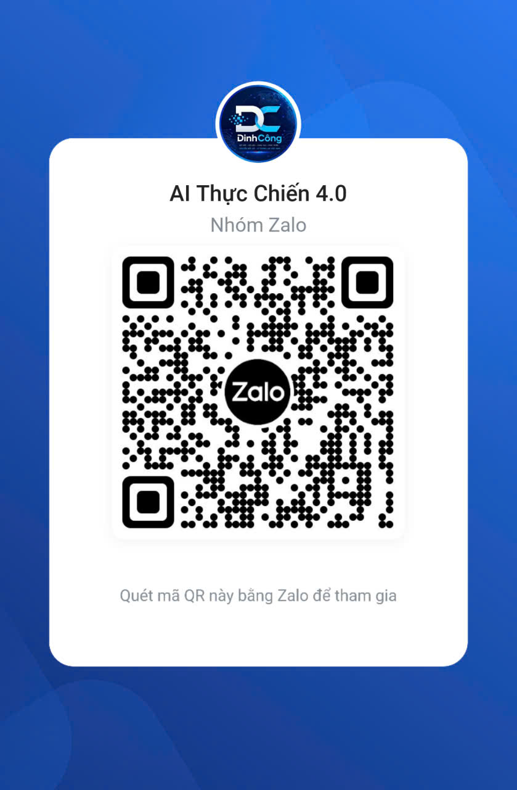

PHẦN MỀM SOẠN THẢO VĂN BẢN NĐ30
Tác giả: Nguyễn Công Dinh, Cần Thơ
Hỗ trợ kỹ thuật và cấp key: Zalo 0386435510
Dùng thử: 30 ngày miễn phí từ lần mở đầu tiên.
Chọn bản bạn muốn dùng:
Bản cấp xã — UBND xã, HĐND xã, Văn phòng Bản Trạm Y tế Xã Hiệp Hưng, Cần Thơ Tải bản cấp xã về máy (.html) — mở file, dùng thử 30 ngày, rồi nhập key bản quyền Tải bản Trạm Y tế về máy (.html) — mở file, dùng thử 30 ngày, rồi nhập key bản quyền Tải bộ biểu mẫu Word ND30 (36 mẫu, .zip) Xem và tải Sách hướng dẫn Soạn thảo ND30 (.pdf, 10 trang)Bản web chạy trên trình duyệt, lưu bản nháp trên máy đang dùng. Bản đầy đủ cho Windows (.exe) chạy offline và lưu bản nháp trong thư mục dữ liệu của ứng dụng. Kiểm tra lại tên, số, ngày và căn cứ trước khi ký và phát hành. Không gửi tên bệnh nhân, CCCD hay văn bản mật vào Gemini.
Nhóm Zalo hỗ trợ AI — AI Thực Chiến 4.0
Quét mã QR này bằng Zalo để tham gia nhóm, hỏi và được hỗ trợ về AI.

Nhóm hỗ trợ AI chung. Riêng key bản quyền ND30 vẫn liên hệ tác giả Nguyễn Công Dinh qua Zalo 0386435510.